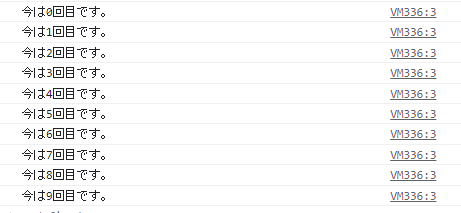

繰り返し
こんにちは！ブラジルの方はこんばんは。（今のところはブラジルの方は１人もこのサイトを閲覧していないのですが...）今回のテーマは繰り返しです。Pythonしかやったことがない人は繰り返しのやり方に戸惑うかもしれないですが、頑張ってください。
for文
繰り返しにはfor文を用います。また場合によってはwhile文を使うこともあります。まあふつうはfor文を使うのでまずはfor文の使い方をマスターしておきましょう。
ところで皆さんは高校数学の内容を覚えていますか？高校数学ではΣ（シグマ）なるものを習ったと思います。全部足し合わせるあれですね。総和記号とも言ったりします。for文はこのΣによく似ています。なのでわからなくなったときはこれを思い出してみてください。では、for文の基本的な書き方です。
for(初期式;条件式;変化式){
//ここにコードを記述
}
なんだこれという方が大半だと思われますが、安心してください。ちゃんと説明します。まず初期式ですがここに書いたことが一番最初に実行されます。例えばlet i=0とか書いたら、変数iが宣言され、0が代入されるのですね。そして次に条件式ですが、この条件式がtrueの限り、for文が実行され続けます。そして最後に変化式ですがこれは一回、繰り返されるごとに実行されます。
そうはいってもやっぱりわかりにくいと思うので、実際に書いてみましょう。
下のコードは１０回コンソールにメッセージを出すプログラムです。
for(let i=0;i<10;i++){
console.log('今は'+i+'回目です。')
}
結果はこのようになりました
ソースを見てあげましょう。まず初期化式は、let i=0ですね。変数iを宣言し0を代入しています。これが一番最初に実行されます。
そして条件式はi<10ですね。変数iが10未満の場合処理が続きます。
そして変化式はi++ですね。この++はインクリメントと呼ばれ１増やすという意味です。つまりiを１増やす(i=i+1)という意味です。
よってこのコードを実行するとまず変数iが宣言され、一回処理が終わるごとにiが1増え、iが10未満でなくなるまで処理が続くこととなります。このようにしてfor文は実装されています。
while文
for文と比べた時while文はもっとシンプルです。ではwhile文の書き方を見てみましょう。
while(条件式){
//ここに処理を記述
}
for文の初期化式と増減式が消えて条件式のみになりましたね。この条件式が満たされる限りwhile文の中の処理が実行され続けます。
ではここで問題です！while文で先ほどの例に出した10回繰り返すfor文と同じことを実装するにはどうすればいいでしょうか？
答えはこうです。
let i=0
while(i<10){
console.log('今は'+i+'回目です。')
i++
}
まず最初に変数iを宣言していますね。そして条件式はiが10未満です。そしてログ出力は先ほどと同じ、そのあとにiを1増やすとあります。このようにするとfor文を再現できます。while文はあまり使いませんが(人にもよる)使い方はしっかり押さえておきましょう。
ということで今回はここまでです。さようなら～